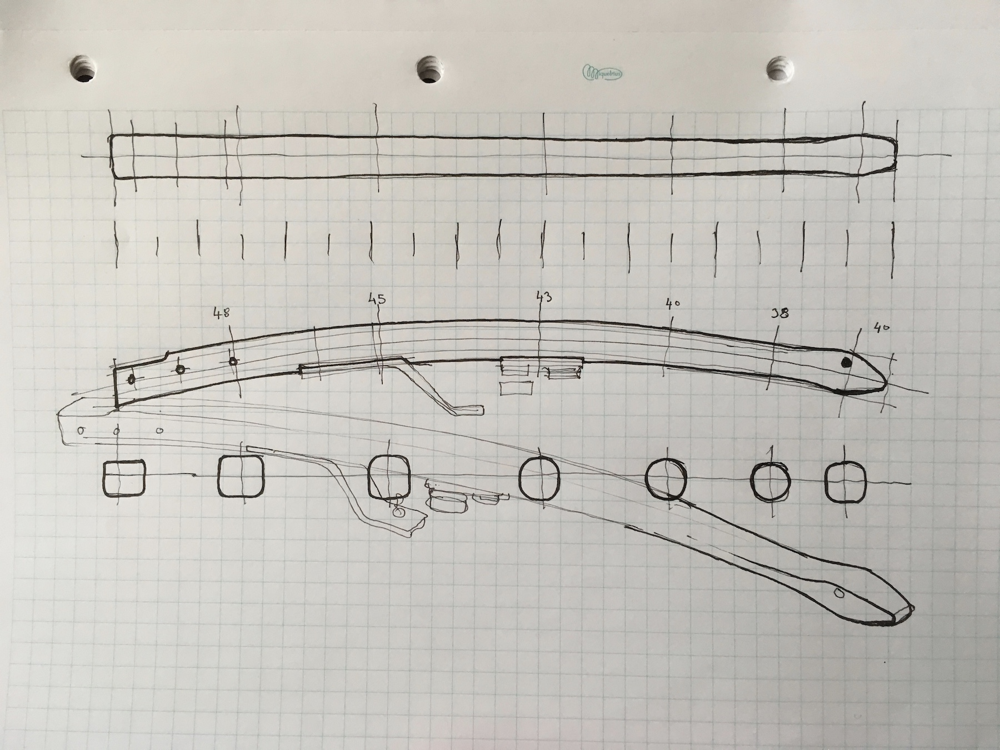
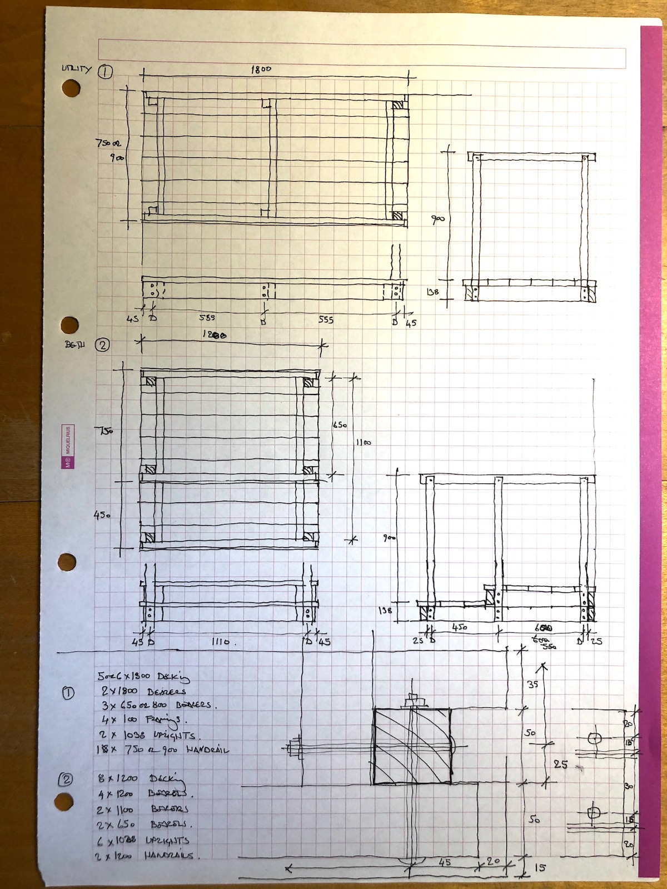
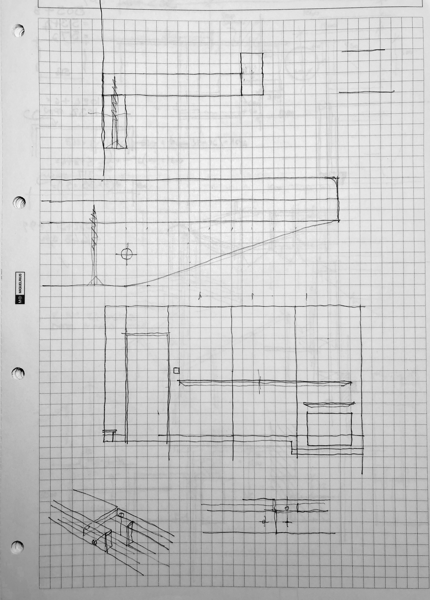
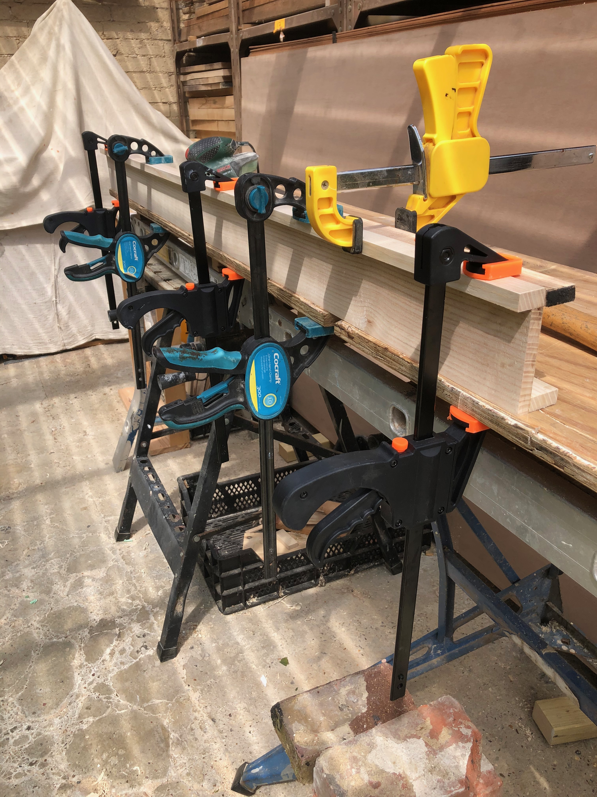
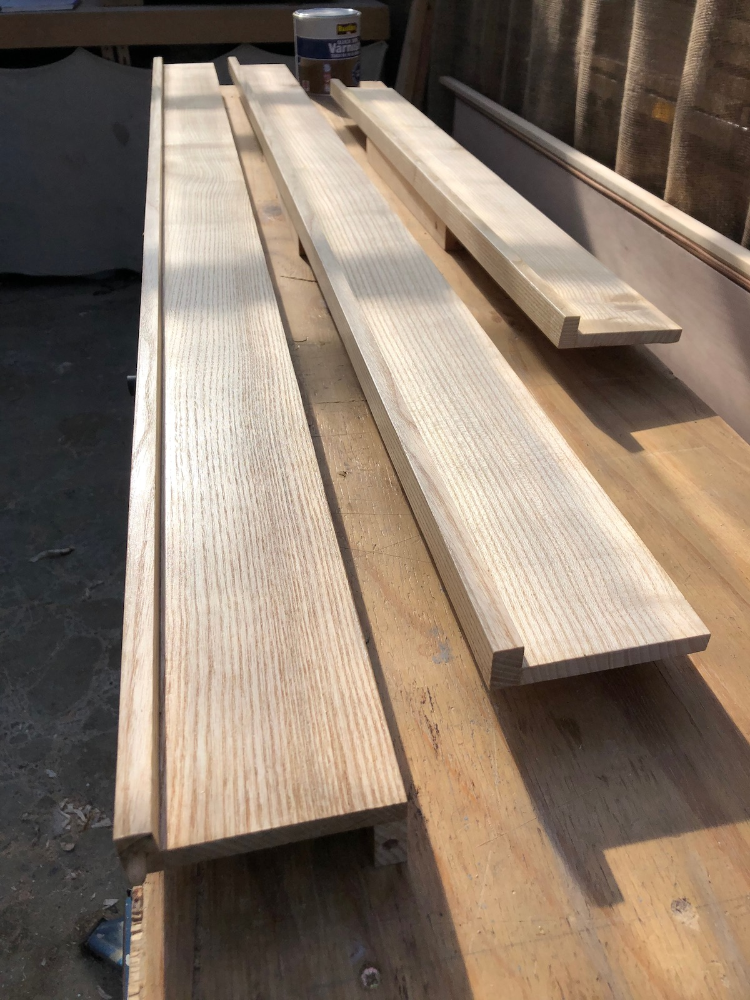

Sunand Prasad once said to me "before you build it draw it". He was right - drawings made quickly to guide making are neccesarily rough but even the most humble drawings are a pleasure to do and essential for the making.



 